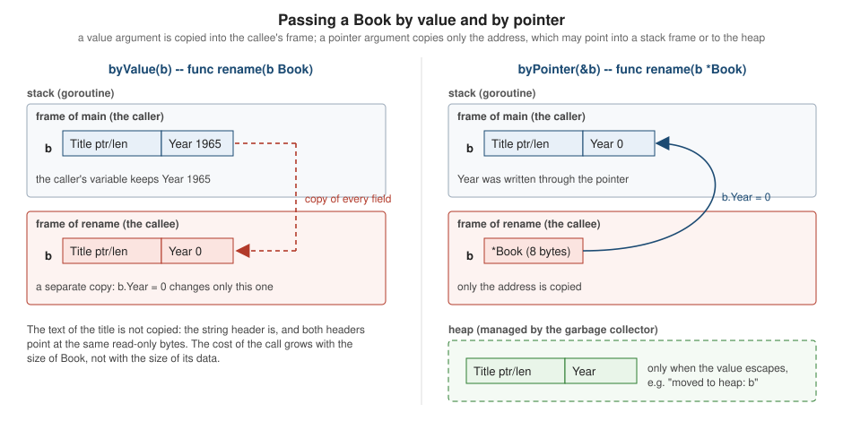

Pointers and Value Semantics
|
This content was generated with the assistance of AI and should be verified against the official documentation before being relied on in production. |
This page is written against Go 1.27 (go1.27.2), checked on 2026-10-18; every go.mod in the examples says go 1.27.
Go is a value-oriented language: assignment, argument passing and range all copy values, and a pointer is the
explicit, typed way to say "share this variable instead". Pointers in Go are deliberately small compared with C and
C++: there is no pointer arithmetic, no -> operator, the garbage collector keeps pointed-to memory alive, and it is
always safe to return a pointer to a local variable. This page covers the pointer operators, new, nil, the decision
between values and pointers, how the compiler decides whether a value lives on the stack or the heap
(escape analysis), and the cost of copying.
The call-by-value rule that gives pointers their purpose is introduced on Functions, Closures and Defer; pointer and value receivers are covered on Methods and Receivers. Readers coming from C will find the contrast on the C reference’s Pointers page, and from Rust on Borrowing and References.
Pointer types and operators
For any type T, the type *T is "pointer to T`": the set of addresses of variables of type `T. The zero value
of a pointer type is nil. Two operators work with pointers:
-
&xtakes the address of an addressable operand (a variable, a pointer indirection, a slice element, a field of an addressable struct, an element of an addressable array) or of a composite literal; -
*pdereferences a pointer: it denotes the variableppoints to, and can be read or assigned.
The selector p.f on a pointer to a struct is shorthand for (*p).f; there is no ->. Indexing, slicing and
range also work directly on a pointer to an array.
package main
import "fmt"
type Book struct {
Title string
Year int
}
func main() {
year := 1965
p := &year // p has type *int and holds the address of year
fmt.Println(*p, p == &year)
*p = 1966 // writing through the pointer changes year
fmt.Println(year)
pp := &p // pointer to pointer
**pp = 1967
fmt.Println(year)
// Pointers to structs: the selector auto-dereferences.
b := Book{"Dune", 1965}
pb := &b
pb.Year++ // same as (*pb).Year++
fmt.Println(b, (*pb).Title)
// The zero value of any pointer is nil.
var np *Book
fmt.Println(np == nil, np)
fmt.Printf("%T %v\n", np, np)
// Pointers to arrays can be indexed and ranged over directly.
arr := [3]int{10, 20, 30}
pa := &arr
pa[1] = 21
for i, v := range pa {
fmt.Print(i, "=", v, " ")
}
fmt.Println(len(pa))
}1965 true
1966
1967
{Dune 1966} Dune
true <nil>
*main.Book <nil>
0=10 1=21 2=30 3Source: A Tour of Go: Pointers
Pointer types are not interchangeable: *int and *int64 are different types, and a pointer cannot be created
from an integer. Taking the address of something that is not addressable is a compile error: a map element, the result
of a function call, a constant, a string literal. Each case below has a real compiler message; the common workaround for
a map of structs is to store pointers in the map (map[string]*Book) or to copy the element out, modify it and store it
back.
package main
import (
"fmt"
"io"
"strings"
)
type Book struct{ Title string }
type Shelf struct{ Books map[string]Book }
func load() Book { return Book{"Dune"} }
func main() {
m := map[string]Book{"a": {"Dune"}}
p := &m["a"]
q := &load()
m["a"].Title = "Emma"
s := Shelf{m}
s.Books["a"].Title = "Ulysses"
var r io.Reader = strings.NewReader("x")
pr := &r
pr.Read(nil)
fmt.Println(p, q)
}# example.com/w5/ce/q11
./main.go:17:8: invalid operation: cannot take address of m["a"] (map index expression of struct type Book)
./main.go:18:8: invalid operation: cannot take address of load() (value of struct type Book)
./main.go:19:2: cannot assign to struct field m["a"].Title in map
./main.go:21:2: cannot assign to struct field s.Books["a"].Title in map
./main.go:25:5: pr.Read undefined (type *io.Reader is pointer to interface, not interface)The type-mismatch errors for pointers are equally explicit:
package main
import "fmt"
type Book struct{ Title string }
func main() {
var b Book
var p *Book = b
var pp **Book = &b
var np *Book
if np == 0 {
fmt.Println("zero")
}
var q *int
var r *int64
fmt.Println(q == r, p, pp)
}# example.com/w5/ce/q12
./main.go:9:16: cannot use b (variable of struct type Book) as *Book value in variable declaration
./main.go:10:18: cannot use &b (value of type *Book) as **Book value in variable declaration
./main.go:12:11: invalid operation: np == 0 (mismatched types *Book and untyped int)
./main.go:17:19: invalid operation: q == r (mismatched types *int and *int64)nil pointers
A nil pointer points to nothing. Reading or writing through one is a run-time panic with the message invalid memory
address or nil pointer dereference (the runtime turns the hardware fault into a recoverable panic, and an unrecovered
one also prints a [signal SIGSEGV ...] line). The panic is a bug to fix, not an error to handle: check for nil where
the type allows it, or make the zero value useful so nil never arrives.
Methods are different from field access. A method with a pointer receiver may be called on a nil pointer, and the method
test its receiver, so a nil *Tree whose methods treat it as the empty tree is a common design.
package main
import "fmt"
type Book struct{ Title string }
func (b *Book) Describe() string {
if b == nil { // a nil receiver is legal and can be handled
return "no book"
}
return b.Title
}
func main() {
var b *Book
fmt.Println(b.Describe()) // calling a method on a nil pointer is fine
defer func() { fmt.Println("recovered:", recover()) }()
fmt.Println(b.Title) // dereferencing nil panics
}no book
recovered: runtime error: invalid memory address or nil pointer dereferenceThere are two traps related to nil that are covered elsewhere: a nil pointer stored in an interface produces a non-nil
interface (see Interfaces), and a nil map or channel behaves differently
from a nil pointer (see Maps and
Channels and Select).
No pointer arithmetic
Go pointers cannot be incremented, added to, subtracted from or converted to and from integers. p++ and p + 1 are
compile errors (the first two lines of the error output above). Walking memory is done with indexes and slices, which are
bounds-checked. The design rationale in the FAQ is safety: with arithmetic, an unchecked pointer can reach any memory,
which defeats the garbage collector and the memory-safety guarantees. The escape hatch is the unsafe package
(unsafe.Pointer, unsafe.Add, unsafe.Slice), covered on
unsafe and Low-Level Programming; ordinary
programs never need it.
new, and address of composite literals
The built-in new allocates a variable and returns a pointer to it. It has two forms:
| Form | Meaning |
|---|---|
|
A pointer to a new variable of type |
|
A pointer to a new variable of the type of |
new(expr) was added in Go 1.26. Before it, "a pointer to the literal 1965" needed a helper function or a temporary
variable, which is why many codebases carry a ptr[T any](v T) *T helper (shown below for comparison). The new form is
what makes optional fields in JSON, SQL and protobuf-style structs a one-liner.
package main
import "fmt"
type Book struct {
Title string
Year int
}
func ptr[T any](v T) *T { return &v } // the pre-1.26 helper
func main() {
// new(T): pointer to a zero value.
n := new(int)
b := new(Book)
fmt.Println(*n, *b)
// Go 1.26: new takes an expression; the pointer points to a variable holding its value.
year := new(1965)
title := new("Dune")
later := new(*year + 1)
fmt.Println(*year, *title, *later)
fmt.Printf("%T %T\n", year, title)
// It is handy for optional fields (JSON, SQL, protobuf style).
type Update struct {
Title *string
Year *int
}
u := Update{Title: new("Dune Messiah"), Year: new(1969)}
fmt.Println(*u.Title, *u.Year)
old := ptr(1965)
fmt.Println(*old)
// Address of a composite literal: allowed, the variable is allocated for you.
pb := &Book{Title: "Emma", Year: 1815}
fmt.Println(pb.Title)
// new(Book{...}) also works in 1.26.
pc := new(Book{Title: "Ulysses", Year: 1922})
fmt.Println(*pc)
}0 { 0}
1965 Dune 1966
*int *string
Dune Messiah 1969
1965
Emma
{Ulysses 1922}The feature depends on the module’s language version. A module that declares an older go line cannot use it:
# example.com/q3old
./main.go:19:10: new(1965) requires go1.26 or later (-lang was set to go1.25; check go.mod)
./main.go:20:11: new("Dune") requires go1.26 or later (-lang was set to go1.25; check go.mod)
./main.go:21:11: new(*year + 1) requires go1.26 or later (-lang was set to go1.25; check go.mod)
./main.go:31:21: new("Dune Messiah") requires go1.26 or later (-lang was set to go1.25; check go.mod)
./main.go:31:48: new(1969) requires go1.26 or later (-lang was set to go1.25; check go.mod)
./main.go:41:8: new(Book{…}) requires go1.26 or later (-lang was set to go1.25; check go.mod)Notes on allocation:
-
newdoes not mean "heap". Where the variable lives (stack or heap) is the compiler’s decision, based on escape analysis (below), not on whether you wrotenewor&T{}. -
&T{...}andnew(T{...})are the same thing for a composite literal;&T{...}is more common and lets you set fields inline.new(T)is idiomatic for types whose zero value is ready to use (new(sync.WaitGroup),new(strings.Builder)), though a plainvar x Tplus&xis equally valid. -
Taking the address of a composite literal (
&Book{...}) is allowed even though a literal is not "addressable"; the spec singles it out as a convenience. -
Go has no
deletefor anewallocation: the garbage collector frees it when it is unreachable (see Memory Management and Garbage Collection). -
makeis a different built-in: it creates slices, maps and channels and returns the value, not a pointer.
Value semantics: pointers as a design choice
Go copies by default. Assignment b2 := b1, passing f(b1), returning a struct and for _, b := range books
all copy the value. This is the value semantics the language is built on, and it is why Go programs are easy to reason
about: a value cannot change underneath you unless it was shared on purpose. The picture below shows the same call made
both ways: with a value argument the callee works on a private copy in its own stack frame; with a pointer argument only
the address is copied, and the callee writes into the caller’s variable (which may itself live on the stack or on the
heap).

Choosing between T and *T (for parameters, struct fields and receivers) comes down to a handful of reasons.
Use a pointer when
-
the function must change the caller’s variable (the pointer is the signal that mutation may happen);
-
the value is large, or copying it would be costly, and callers do not need an independent copy;
-
the type contains something that must not be copied (a
sync.Mutex, async.WaitGroup, astrings.Builderthat has been used): see "Types that must not be copied" below; -
the value has identity (a connection, a file, a
*Store): two copies would be two different things; -
"no value" must be distinguishable from the zero value (below).
Use a value when
-
the type is small and immutable-ish (a number, a
time.Time, a small struct such asISBN); -
you want the compiler to keep it on the stack and the garbage collector out of the picture;
-
you want callers to know the function cannot change their data.
Bodner’s chapter 6 puts it as "pointers are a last resort": start with values, add a pointer when one of the reasons
above applies, not because pointers feel faster. Copying a small struct is usually cheaper than allocating it on the
heap and having the GC trace it, and a pointer parameter can make a value escape (see the next sections). The corollary
for slices, maps and channels: they already contain a reference internally, so they are passed by value without a pointer
(*[]int and *map[K]V are almost always a sign of a design problem).
Zero value versus "no value"
The zero value of a struct field or variable is a real value: 0, "", false. A *int adds a second state, nil,
meaning "absent". This is how JSON null, an unset database column and an optional protobuf field map to Go. Do not
reach for a pointer when the zero value already means "none" (an empty string, a zero time.Time, an empty slice), and
use one when zero is a legitimate answer ("0 stars" versus "not rated").
package main
import (
"encoding/json"
"fmt"
)
type Review struct {
Stars int `json:"stars"` // 0 is a valid-looking value, but is it "no rating"?
Rating *int `json:"rating"` // nil means "no value"; 0 is a real zero
}
func main() {
var r Review
fmt.Println(r.Stars, r.Rating == nil)
r.Rating = new(0)
out, _ := json.Marshal(r)
fmt.Println(string(out))
var absent Review
out, _ = json.Marshal(absent)
fmt.Println(string(out))
var back Review
_ = json.Unmarshal([]byte(`{"stars":0,"rating":null}`), &back)
fmt.Println(back.Rating == nil)
}0 true
{"stars":0,"rating":0}
{"stars":0,"rating":null}
trueSource: encoding/json: Marshal
A cheaper alternative to a pointer is a small struct or a ok flag (type Rating struct { Stars int; Set bool }), at the
price of more code at every call site; database/sql offers sql.Null[T] (Go 1.22) for the database case.
Pointers into slices, arrays and loop variables
A pointer to a slice element points into the slice’s backing array, and keeps that whole array alive. Three rules follow
from that and from the copying range loop:
-
for _, b := range booksgivesba copy of each element, so assigning tobor taking&bdoes not touch the slice. To modify elements in place, index:books[i].Year++, orp := &books[i]. -
Since Go 1.22,
&binside arangeor three-clause loop is a different variable on each iteration, so collecting those pointers into a slice is correct. Before 1.22 all of them pointed at one variable (see Functions, Closures and Defer). -
After
appendreallocates the backing array, an earlier&books[0]still points into the old array: writes through it are not seen through the new slice.
package main
import "fmt"
type Book struct {
Title string
Year int
}
func main() {
books := []Book{{"Dune", 1965}, {"Emma", 1815}}
// range copies each element: modifying the copy changes nothing.
for _, b := range books {
b.Year = 0
}
fmt.Println(books)
// Index to modify in place, or take the address of the element.
for i := range books {
p := &books[i]
p.Year++
}
fmt.Println(books)
// Per-iteration variables (Go 1.22+): &b is a different address on each iteration.
var ptrs []*Book
for _, b := range books {
ptrs = append(ptrs, &b)
}
fmt.Println(ptrs[0].Title, ptrs[1].Title, ptrs[0] != ptrs[1])
// A pointer into a slice keeps the OLD backing array alive after append reallocates.
first := &books[0]
books = append(books, Book{"Ulysses", 1922}) // len 2 == cap 2: reallocates
first.Title = "Changed"
fmt.Println(books[0].Title, first.Title)
}[{Dune 1965} {Emma 1815}]
[{Dune 1966} {Emma 1816}]
Dune Emma true
Dune ChangedA pointer to one element of a large slice also keeps the whole backing array reachable by the garbage collector, a classic memory-retention bug when a small sub-slice or a pointer is kept long after the big slice is no longer needed.
Comparing pointers
Two pointers are equal if they point to the same variable or are both nil. A struct containing a pointer compares the pointer by address, not by what it points to, so two structs with equal-looking authors may still be unequal. Pointers are valid map keys, with identity (not content) as the meaning.
package main
import "fmt"
type ISBN string
type Author struct{ Name string }
type Book struct {
ISBN ISBN
Author *Author
}
func main() {
a := &Author{"Herbert"}
b1 := Book{"1", a}
b2 := Book{"1", a}
b3 := Book{"1", &Author{"Herbert"}}
// Pointers compare by address; structs compare field by field, including the pointer.
fmt.Println(b1 == b2, b1 == b3, *b1.Author == *b3.Author)
x, y := 1, 1
px, py := &x, &y
fmt.Println(px == py, *px == *py, px == &x)
// Pointers are valid map keys: identity, not content.
seen := map[*Author]bool{a: true}
fmt.Println(seen[a], seen[&Author{"Herbert"}])
}true false true
false true true
true falsePointers to distinct zero-size variables may or may not be equal, so code must not depend on it.
Stack versus heap and escape analysis
The language says nothing about where a variable lives. The FAQ puts it directly: from a correctness standpoint you do not need to know, because every variable exists as long as there are references to it. The implementation does have a rule, and it matters for performance:
-
a variable the compiler can prove is not referenced after its function returns is allocated in the function’s stack frame: allocation and release cost almost nothing and the garbage collector never sees it;
-
a variable whose address may be used after the function returns (or whose lifetime the compiler cannot bound) is moved to the heap; it is managed by the garbage collector and allocating it costs more.
The compiler’s decision is called escape analysis. It is conservative: if it cannot prove that a value stays put, the
value escapes. A Go program can therefore return &local safely (unlike C), and the price is a heap allocation that the
programmer did not write explicitly.
Asking the compiler: -gcflags=-m
go build -gcflags=-m prints the escape-analysis decisions (and, because the same flag is used, inlining decisions).
Repeating the flag (-gcflags='-m -m') prints the reasoning chain for each decision, and adding -l disables inlining so
the report is about the function you wrote rather than what the inliner made of it. By default -gcflags applies only to
the packages named on the command line; -gcflags=all=-m applies it to every package, dependencies included.
The program below has one function for each interesting case; the report that follows was produced by
go build -gcflags='-m -l' ./e01 with Go 1.27.2. The line numbers refer to the listing.
package main
import "fmt"
type Book struct {
Title string
Year int
}
// byValue: the Book never leaves the frame, so it stays on the stack.
func byValue() int {
b := Book{"Dune", 1965}
return b.Year
}
// returnsPointer: the pointer outlives the frame, so the Book is moved to the heap.
func returnsPointer() *Book {
b := Book{"Dune", 1965}
return &b
}
// takesPointer does not retain its argument, so callers can keep the value on the stack.
func takesPointer(b *Book) { b.Year++ }
// store keeps the pointer in a global: the argument escapes.
var last *Book
func store(b *Book) { last = b }
func viaInterface(b Book) {
fmt.Println(b) // converting to any for fmt makes the value escape
}
func main() {
fmt.Println(byValue())
p := returnsPointer()
fmt.Println(p.Year)
local := Book{"Emma", 1815}
takesPointer(&local)
fmt.Println(local.Year)
kept := Book{"Ulysses", 1922}
store(&kept)
viaInterface(local)
}# example.com/w5/e01
e01/main.go:18:2: moved to heap: b
e01/main.go:23:19: b does not escape
e01/main.go:28:12: leaking param: b
e01/main.go:30:19: leaking param: b
e01/main.go:31:13: ... argument does not escape
e01/main.go:31:14: b escapes to heap
e01/main.go:43:2: moved to heap: kept
e01/main.go:35:13: ... argument does not escape
e01/main.go:35:21: byValue() escapes to heap
e01/main.go:37:13: ... argument does not escape
e01/main.go:37:15: p.Year escapes to heap
e01/main.go:41:13: ... argument does not escape
e01/main.go:41:19: local.Year escapes to heapSource: cmd/compile
Reading the report line by line:
| Report line | Meaning |
|---|---|
|
In |
|
In |
|
In |
|
In |
|
The temporary slice that holds the |
-gcflags=-m is the quickest way to find out why a benchmark shows an unexpected allocation, and
go build -gcflags='-m -m' explains the data flow behind each line, for example the chain that starts at &b
(address-of) and ends at the returned value.
Common reasons a value escapes
-
its address (or a pointer into it, including a slice or a closure that captures it) is returned or stored in a package-level variable, a heap object, a channel or an interface;
-
it is converted to an interface (
any,error,fmt.Stringer) and the compiler cannot prove the interface does not outlive the function (the classic case is arguments tofmt.Printlnand logging calls); -
it is captured by a closure that escapes (returned, stored, or started as a goroutine);
-
its size is not known at compile time (
make([]T, n)with a non-constantn) or it is too large for the stack; -
it is used through an indirect call, such as a method call through an interface or a function value, where the callee is not known.
Whether something is inlined changes the picture, which is why the same code can report different escape results in a
benchmark and in production. The point is not to memorise every rule but to measure: testing.AllocsPerRun and
-benchmem (see Benchmarks, Fuzzing and synctest)
report the allocations per operation, and -gcflags=-m says where they come from.
package main
import (
"fmt"
"testing"
)
type Big struct {
Title string
Body [4096]byte
}
//go:noinline
func byValue(b Big) int { return len(b.Title) + int(b.Body[0]) }
//go:noinline
func byPointer(b *Big) int { return len(b.Title) + int(b.Body[0]) }
type Small struct{ Year, Pages int }
//go:noinline
func newSmall() *Small { return &Small{1965, 700} } // escapes: heap
//go:noinline
func valSmall() Small { return Small{1965, 700} } // returned by value: no allocation
var sink int
func main() {
var b Big
fmt.Println("allocs by value: ", testing.AllocsPerRun(1000, func() { sink += byValue(b) }))
fmt.Println("allocs by pointer:", testing.AllocsPerRun(1000, func() { sink += byPointer(&b) }))
fmt.Println("allocs *Small: ", testing.AllocsPerRun(1000, func() { sink += newSmall().Year }))
fmt.Println("allocs Small: ", testing.AllocsPerRun(1000, func() { sink += valSmall().Year }))
}allocs by value: 0
allocs by pointer: 0
allocs *Small: 1
allocs Small: 0Source: testing: AllocsPerRun
The output shows two things at once. Passing a 4 KiB struct by value does not allocate (it is copied on the stack), and returning a small struct by value does not allocate either, while returning a pointer to a fresh struct costs one heap allocation per call. Goroutine stacks start small and grow as needed, and the runtime updates pointers into a stack that it moves, which is why a pointer to a stack variable is always valid.
For the garbage collector side (how heap memory is traced and reclaimed, GOGC, GOMEMLIMIT, and the size-specialised
allocation routines added in Go 1.27) see
Memory Management and Garbage Collection
and, for reducing allocations, Performance and PGO.
When copying is expensive
Copying cost is proportional to the size of the value, not to the amount of data it refers to. A string, slice, map or
channel is a few words (a string is 2 words, a slice 3, a map or channel 1), no matter how much data it points to, so
passing them by value is cheap. Arrays and large structs are copied in full: a [4096]byte field makes the struct 4 KiB
to copy on every call, return, assignment and range iteration. Typical remedies, in order of preference:
-
Pass and store a pointer to the large struct (accepting that it may now escape);
-
Iterate by index (
for i := range items { p := &items[i] ... }) instead of copying each element withrange; -
Use a slice instead of a large array;
-
Measure before changing anything: copies of small structs are cheap, and the pointer version can be slower because it adds an allocation and GC work.
Also keep in mind that a mix of value and pointer receivers on one type is a design smell (the method set differs, and copies surprise callers); see Methods and Receivers.
Types that must not be copied
Some values break when copied: a sync.Mutex that is locked while copied, a sync.WaitGroup or sync.Once that is
in use, an object that owns a buffer or file descriptor. Go does not stop you from copying, but go vet does: its
copylocks analyzer reports passing, assigning, returning, ranging over and receiving by value any struct that contains
a sync.Mutex (or anything with Lock and Unlock methods).
package main
import (
"fmt"
"sync"
)
type Store struct {
mu sync.Mutex
books map[string]int
}
// Value receiver: copies the mutex. go vet reports this.
func (s Store) Count() int {
s.mu.Lock()
defer s.mu.Unlock()
return len(s.books)
}
func main() {
s := Store{books: map[string]int{"Dune": 1}}
t := s // copies the lock too
fmt.Println(s.Count(), len(t.books))
}q06/main.go:14:9: Count passes lock by value: example.com/w5/q06.Store contains sync.Mutex
q06/main.go:22:7: assignment copies lock value to t: example.com/w5/q06.Store contains sync.MutexSource: cmd/vet
The fix is a pointer receiver and passing the struct by pointer. A type that does not need a real lock but must not be
copied can embed a zero-size noCopy marker with Lock and Unlock methods; the standard library uses this trick
(sync.noCopy) and so can your types.
package main
import "fmt"
// noCopy has no fields; its Lock/Unlock methods make go vet's copylocks check
// flag any copy of a struct that contains it.
type noCopy struct{}
func (*noCopy) Lock() {}
func (*noCopy) Unlock() {}
type Index struct {
_ noCopy
words map[string]int
}
func NewIndex() *Index { return &Index{words: map[string]int{}} }
func (ix *Index) Add(w string) { ix.words[w]++ }
func report(ix Index) int { return len(ix.words) } // copies the lock-like value
func main() {
ix := NewIndex()
ix.Add("dune")
fmt.Println(report(*ix))
cp := *ix
fmt.Println(len(cp.words))
}q08/main.go:21:16: report passes lock by value: example.com/w5/q08.Index contains example.com/w5/q08.noCopy
q08/main.go:26:21: call of report copies lock value: example.com/w5/q08.Index contains example.com/w5/q08.noCopy
q08/main.go:27:8: assignment copies lock value to cp: example.com/w5/q08.Index contains example.com/w5/q08.noCopySource: cmd/vet
Constructors that return a pointer (func NewIndex() *Index) are the usual companion to such types, since they also let
the type hide its zero-value requirements.
Pointers to interfaces, and the rest
-
A pointer to an interface is almost never needed. An interface value is already a (type, data) pair, and a method call through
*io.Readerdoes not compile (the error is in the table above:pointer to interface, not interface). Pass the interface by value; if a callee must be able to replace it, redesign the API. -
Pointers to pointers (
**T) exist but are rare: they are needed to let a callee change which object a caller’s pointer refers to (func swap(a, b **T)), and most designs use a return value instead. -
Method sets: a pointer type’s method set includes both pointer- and value-receiver methods, a value type’s includes only value-receiver ones, so whether
Tor*Tsatisfies an interface depends on the receivers (see Interfaces). -
Struct fields of pointer type make equality, copying and JSON encoding behave as described above; embedding a pointer (
*Bookas an embedded field) is covered on Structs and Embedding. -
Weak pointers (
weak.Pointer, Go 1.24) and cleanups are the tools for caches that must not keep objects alive; see Cleanups, Weak Pointers and Interning.
Compile errors and tools at a glance
| Message or tool | Cause |
|---|---|
|
|
|
Modifying a field of a struct stored by value in a map; copy, modify and store back, or store pointers. |
|
Pointer arithmetic is not supported. |
|
A value where a pointer is required, or the reverse; add |
|
|
|
|
|
A nil pointer was dereferenced at run time. |
|
|
|
Prints escape analysis and inlining decisions. |
Where the books are outdated
-
Bodner, chapter 6 gives a helper such as
func ptr[T any](v T) *T(or a temporary variable) to take the address of a literal;new(expr)since Go 1.26 replaces both for the common case. The chapter’s advice on pointers as a last resort, on nil pointers and on how mutability is signalled still stands, and its stack/heap discussion is still correct in principle (the compiler’s report lines are shown above). Its sections on tuning allocations predate the Green Tea collector (default in Go 1.26) and the size-specialised allocation routines of Go 1.27, so allocation costs differ from the figures an older text would suggest. -
Vivien, chapter 4 introduces pointers,
newand the address of composite literals; it predatesnew(expr)and the Go 1.22 per-iteration loop variables that make&vinside a loop safe. -
Both books describe the escape-analysis tooling as it was in their day; current output lines are shown above, and the
go vetcopylockscheck applies to the patterns in the "Types that must not be copied" section.
Version notes
| Version | Change |
|---|---|
Go 1.17 |
The register-based calling convention made small value arguments cheaper to pass. |
Go 1.22 |
Per-iteration loop variables ( |
Go 1.24 |
|
Go 1.26 |
|
Go 1.27 |
Size-specialised memory allocation routines in the compiler (small allocations under 80 bytes get cheaper). |
Source: Go 1.27 Release Notes